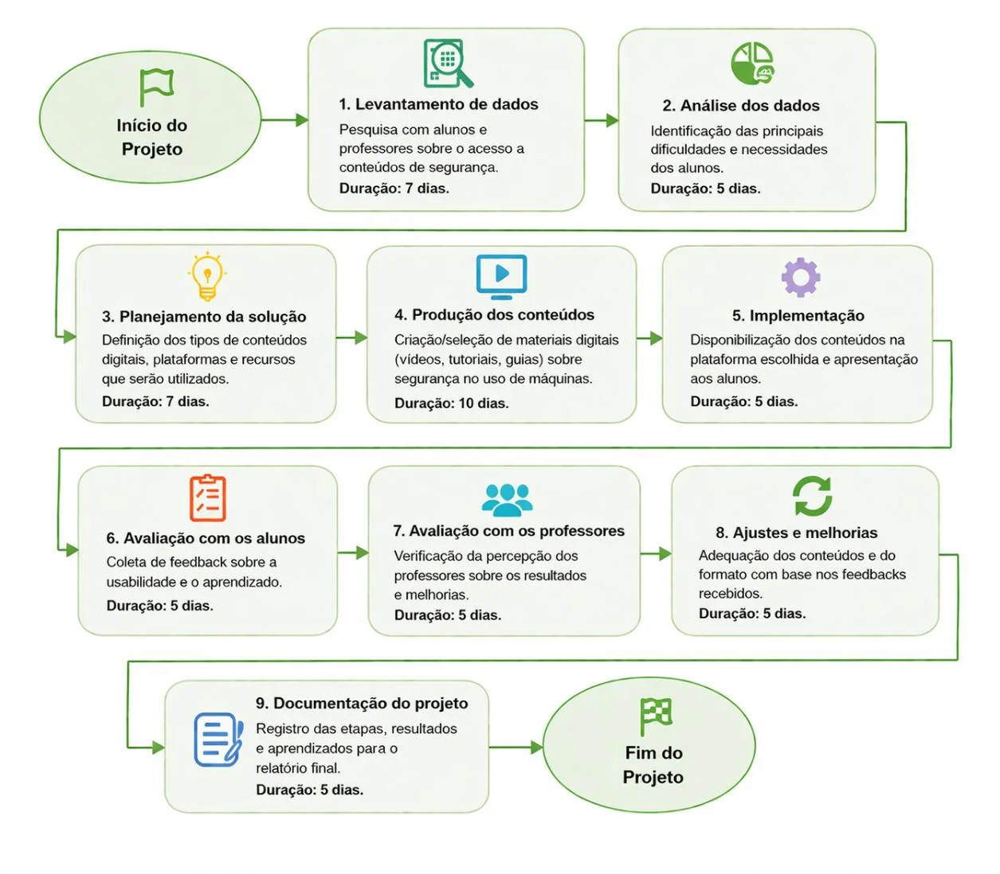

Organizar conhecimento técnico em um só lugar.
Na atividade extensionista de ADS, investiguei a dificuldade de encontrar conteúdos de segurança de máquinas espalhados por diferentes fontes. A solução proposta foi um portal centralizado de consulta com normas, vídeos, manuais, boas práticas e materiais didáticos.
Entrega comprovada: levantamento acadêmico, organização da solução e protótipo visual. Não é apresentado como sistema desenvolvido e implantado.
Evidência 1 · Protótipo conceitual

Evidência 2 · Método de desenvolvimento

O que este projeto demonstra
- Identificação do problema e levantamento preliminar de necessidades.
- Organização de conteúdo por categorias e proposta de navegação.
- Prototipação de interface orientada a um público de ensino técnico.
- Conexão entre conhecimento em NR-12, análise de sistemas e educação digital.
Projeto acadêmico extensionista da UNINTER. O relatório registra limitações na validação direta com o público-alvo; por isso não são alegados resultados de uso em produção.